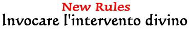
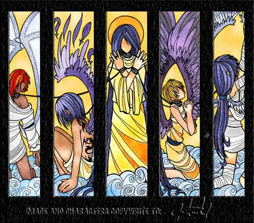

Le seguenti regole possono essere utilizzate da tutti i chierici per invocare in proprio soccorso l'intervento diretto della propria divinità. In momenti di estremo bisogno un chierico può, infatti, pregare la propria divinità affinché questa intervenga manifestando la propria potenza ed utilizzando potere divino in favore del proprio chierico.
Le divinità non gradiscono questo tipo di richieste e spesso non le assecondano, a volte però decidono di intervenire per manifestare la propria presenza e ricordare agli esseri mortali che esistono e che dispongono di poteri superiori. In altre occasioni, invece, si adirano per essere state disturbate e puniscono il chierico ed i suoi alleati.
Di seguito sono riportate le regole generali applicabili a tutti i culti ed utilizzate dai chierici quando decidono di invocare l'aiuto della divinità. Successivamente sono indicate le regole specifiche ed i tipi di intervento divino che cambiano, invece, a seconda della divinità invocata.
Invocare l'intervento divino: Per poter invocare l'intervento divino il personaggio deve possedere ed impugnare il simbolo sacro. Invocare l'intervento divino si considera un'azione che impiega tutto il round del chierico il quale non potrà effettuare nessuna altra azione. Non richiede però che il chierico resti concentrato. Inoltre, richiedendosi unicamente che il personaggio preghi stringendo tra le mani il simbolo sacro, occorre notare che in deroga alle regole generali tale azione può essere compiuta anche da chi essendo uscito da un coma si trova per 24 ore impossibilitato ad effettuare azioni complesse. Alla fine del round come ultima azione si effettua il tiro dell'intervento divino e se il risultato è positivo si applicheranno i relativi effetti.
Quando si può richiedere l'intervento divino: Ogni chierico può provare ad invocare l'intervento divino una sola volta per livello di esperienza, indipendentemente dal risultato positivo dell'intervento.
Possibilità di intervento: Le possibilità che la divinità risponda positivamente all'intervento dipendono da alcuni fattori generali ed altri speciali che variano a seconda della divinità. Per il tiro si utilizza un dado percentuale. Si noti che i risultati di 96, 97, 98, 99 e 100 indicheranno sempre un fallimento critico per cui la divinità risulterà adirata nei confronti del chierico e dei suoi alleati e li punirà conseguentemente. Si noti che questo tiro non può essere modificato in alcun modo e non sono utilizzabili a riguardo punti divini.
Modificatori comuni a tutte le divinità
Percentuale base di
successo: 24%
Bonus per il livello del chierico: +1% per livello di esperienza
Se il chierico non ha richiesto l'intervento divino nel livello precedente: +5%
(+10% se il chierico non ha mai richiesto un intervento divino)
Se la situazione per la quale è stato richiesto l'intervento è sicuramente
mortale: +5%
Se il chierico ha il medesimo allineamento della divinità: +5%
Se il chierico è uscito da uno stato comatoso da meno di 24 ore: +3%
Se la divinità del chierico appartiene alla Fratellanza della Luce e il
chierico sta affrontando ministri di un culto delle Forze Oscure, e viceversa:
+5%
ARLINIR
Regola
speciale
Se il chierico porta con se un'Adoratrice della Luna (vedi
i riti) può assorbire il potere che ha cumulato fino a quel momento nella
pianta per ricevere maggiori possibilità di intervento divino. Per ogni
punto pianta così utilizzato (e definitivamente
perso) il chierico riceverà il 3% supplementare di riuscire nell'intervento
divino, con un massimo di +15% utilizzando 5 punti pianta.
Punizione
In un diametro di 3 metri sotto i piedi del chierico e di tutti i suoi alleati che si trovino entro 100 metri da costui
sorge una vegetazione di prato e piccoli arbusti (cat. B)
che provano a bloccare esclusivamente queste creature. Tutti costoro
dovranno immediatamente superare un tiro salvezza come se soggette all'effetto
della magia Entangle ottenendo un malus (ulteriore
ad ogni altro modificatore) di -1 a tale tiro. La vegetazione e l'effetto divino
permarrà nell'area per 10 rounds.
Tipo di
intervento divino
Guarigione Istantanea, il chierico
che seleziona questo potere potrà curare immediatamente un ammontare di danni
pari a 25 punti ferita + 5 punti ferita per livello di
esperienza. Il chierico potrà distribuire questa cura magica a piacimento
su di se e su tutti i suoi alleati che siano fedeli di Arlinir o Amici del
Popolo Elfico e si trovino entro
50 metri dal chierico. Il chierico può imputare le cure come ritiene opportuno
(su ferite critiche da guarire, sull'ammontare dei punti ferita persi dal
soggetto od anche parzialmente sull'uno e parzialmente sull'altro). Si noti che
si tratta a tutti gli effetti di una cura magica.
Difensore
di Arlinir, il chierico invoca
l'intervento della divinità per far apparire entro 15 metri di distanza
dallo stesso un albero animato che combatta per lui e lo difenda. L'albero può
solo combattere per difendere il chierico di Arlinir o seguirlo ed è comandato
come un summonato il cui ordine di partenza se non diversamente specificato dal
chierico è quello di seguire e difendere il chierico stesso. La magia può essere
lanciata anche al chiuso purchè ci sia un soffitto abbastanza alto da allocare
l'albero, in ogni caso il chierico può far apparire un albero più basso affinché
entri nella zona richiesta. L'albero animato si considera a tutti gli effetti
una creatura summonata ed ha le seguenti caratteristiche,
Albero Animato :
(AC
5 se Medium, 4 se Large, 3 se Huge, ; DV 2 + 1 DV per livello del chierico; Pf 6
a DV se medium, 8 a DV se large, 11 a DV se huge; Thac0 21 - 1 a DV; Size Medium
fino a 5 DV, Large da 6 a 8 DV, Huge oltre i 9 DV; Attacchi 2 rami, Danni (da
botta) 1d6/1d6 se medium, 1d8+1/1d8+1 se large, 1d10+2/1d10+2 se huge; Move 6,
Morale Fearless (20), Intelligenza None (0).
L'albero animato cresce di dimensioni a seconda dei suoi dadi vita, un albero
medium è alto 2 metri, un albero large è alto 3,5 metri, un albero huge è alto 5
metri. L'albero animato è
particolarmente sensibile ai
danni da fuoco che
provocano allo stesso il 50% dei danni in più per eccesso. Avendo una durissima
corteccia, invece, i danni da botta che subisce saranno ridotti del 25% per
eccesso.
L'albero animato non potrà
allontanarsi in nessun caso a più di 30 metri dal chierico di Arlinir (qualora
ciò si verificasse l'albero svanirà alla fine del round) e resterà a difesa del
chierico di Arlinir per 30 minuti.
Aiuto della Natura, questo potere divino può essere invocato esclusivamente in zone all'aperto e non su zone d'acqua o su imbarcazioni che ivi galleggiano). In un'area selezionata dal chierico pari a tante zone dal diametro di 3 metri quanto è il livello del chierico stesso +2 sorge una vegetazione di foresta (cat. C) con arbusti e piante rampicanti che provano a bloccare qualsiasi creatura presente nell'area ad eccezione del chierico e dei suoi alleati. Le zone dove far apparire la vegetazione devono trovarsi entro 30 metri dal chierico. Le creature che si trovano nell'area o vi entrano saranno soggette all'effetto della magia Entangle ottenendo un malus (ulteriore ad ogni altro modificatore) al tiro salvezza pari a -1 per ogni quattro livelli di esperienza del chierico (-1 dal 1° al 4° livello, -2 dal 5° all'8° livello, ecc...). La vegetazione e l'effetto divino permarranno nell'area per 1 ora per livello di esperienza del chierico.
AZATAR
Regola
speciale
Il chierico può utilizzare punti oscuri per
incrementare le proprie possibilità di 2% per punto utilizzato, fino ad un
massimo di +10%.
Punizione
Il chierico e tutti i suoi alleati presenti nella zona sono avvolti dalle fiamme
e subiscono 1d4 danni per livello di esperienza del chierico che ha provato
l'intervento, trattandosi di fiamme divine che bruciano l'anima di chi le
subisce nessuna resistenza al fuoco limiterà questi danni.
Tipo di
intervento divino
Fiamme Demoniache, fino ad un avversario per
livello di esperienza del chierico, che si trovi entro 100 metri dallo stesso e
sia per lui visibili, viene avvolto da fiamme infernali e subisce 1d3+3 danni
per livello di esperienza del chierico, non sono ammessi tiri salvezza per
evitare o per limitare questi danni che però si considerano danni da fuoco
magico (come quelli di una fireball).
Apparizione
di Demone Minore, entro 20 metri dal chierico compare un demone minore
che cambia con il livello del chierico, costui difenderà il chierico ed i suoi
alleati e obbedirà agli ordini impartiti dal chierico (si considera come un
summonato ai fini del comando), per 5 rounds + 1 round per
livello di esperienza del chierico.
Chierico di 1°- 5° livello di esperienza: Atranot.
Chierico di 6°- 10° livello di esperienza: Baatezu,
Lesser - Hamatula.
Chierico di 11° o + livello di esperienza: Baatezu,
Greater - Cornugon.
Si noti che al temine della durata deve tirarsi un
dado percentuale con un risultato di 86 o superiore, il demone non scompare ma
si rivolta contro il chierico ed i suoi alleati attaccandoli per 2d3 rounds, al
termine dei quali svanirà nel nulla.
Impossessamento Demoniaco, il chierico e tutti i suoi alleati che si trovino entro 30 metri dallo stesso e che siano consenzienti ricevono i benefici del potere Furia Demoniaca (come il potere dei chierici di Azatar).
FORZE DELLA NATURA
Regola
speciale
Il chierico può utilizzare un unico Cristallo Elementale
per ricevere un bonus del 7% di riuscire ad invocare l'intervento divino.
Punizione
In un'area
d'effetto di 12 metri di raggio centrata sul chierico si verificherà una
pioggia di pietre che colpiscono tutti coloro si trovano al suo interno. La
pioggia di rocce provoca 1d6 danni da botta per livello di
esperienza del chierico che ha richiesto l'intervento divino. Ogni
creatura all'interno dell'area può, superando un tiro salvezza contro
incantesimi (modificato dal reaction adjustment della destrezza), dimezzare i
danni subiti. Si noti che essendo richiamate dalla magia normali pietre il danno
provocato sarà comune danno da botta.
Tipo di
intervento divino
Sfera di Fuoco, il chierico evoca ad esistenza una
sfera di fuoco estremamente intenso larga tre metri
che apparirà entro 21 metri di distanza. All'inizio di ogni round di presenza
della sfera il chierico potrà spostarla facendola muovere fino a 9 metri con una
free action che richiede componenti somatici e materiali ma non il mantenimento
della concentrazione ed impone una penalità di +3 alle successive azioni. Tutti
coloro entrano in contatto con la sfera subiscono immediatamente 3-16 danni da
fuoco magico (2d6+1d4) + 2 danni supplementari per livello di esperienza del
chierico. Tali danni saranno dimezzabili superando un tiro salvezza su
robustezza. In caso di permanenza nella posizione occupata dalla sfera sarà
provocato il medesimo ammontare di danno alla fine di ogni round successivo.
Alla fine di ogni round, inoltre la sfera provocherà 2d4+2 danni da calore a
tutti coloro si trovino entro 3 metri dalla stessa (tranne a coloro che hanno
subiti i maggiori danni previsti per il contatto con la sfera), dimezzabili
superando un tiro salvezza su robustezza. Si noti che, in ogni caso, una singola
creatura può subire tali danni una sola volta al round. Fino a che il chierico
si trova ad una distanza superiore a 21 metri dalla sfera lo stesso non potrà
spostarla. Se il chierico muore la sfera svanirà immediatamente, altrimenti la
sfera resterà ad esistenza per 2 round + 1 round supplementare ogni 3 livelli di
esperienza del chierico (3 round dal 1° al 3° livello, 4 round dal 4° al 6°
livello, e così via...).
Vortice della Salvezza. Questo intervento divino può essere utilizzato solo all'aperto. Fino a una creatura + una creatura supplementare ogni tre livelli di esperienza del chierico superiori al primo (1 creatura al 1° livello, 2 creature al 4° livello, 3 creature al 7° livello, e così via...), che siano consenzienti e si trovino entro 30 metri dal chierico, saranno circondate da un vortice d'aria tumultuoso che le solleverà e trasporterà volando presso il più vicino tempio delle Forze della Natura dopo 5 minuti di ogni km. di percorrenza. Si noti che non sarà possibile effettuare alcun attacco di opportunità nei confronti delle creature prelevate da tale vortice, e le stesse saranno protette dallo stesso senza che sia possibile colpirle anche lanciando oggetti o magie.
Resistenza della Pietra, Fino a una creatura + una creatura supplementare ogni tre livelli di esperienza del chierico superiori al primo (1 creatura al 1° livello, 2 creature al 4° livello, 3 creature al 7° livello, e così via...), che siano consenzienti e si trovino entro 30 metri dal chierico, saranno trasformate in pietra estremamente resistente. In tale stato queste creature saranno immobili e non potranno effettuare alcuna azione sebbene restino consapevoli di ciò che accade loro intorno. Queste creature riceveranno inoltre una resistenza totale ai danni prodotti fino alle armi magiche +3 od attacchi equivalenti, una riduzione di 10 danni da ogni singolo ammontare di danno elementale subito, saranno considerate come costruiti ai fini dell'immunità al veleno, all'energia positiva e negativa, ai danni mentali ed a tutti gli effetti che funzionano solo sulle creature dotate di corpo organico. L'effetto dell'intervento di divino dura 4 round + 1 round per livello e non può essere dissolto magicamente. Alla fine di ogni round di durata di tale effetto, però, ogni singola creatura potrà interromperlo assumendo la propria forma originaria.
KALIAN
Regola
speciale
Il chierico può utilizzare Punti della Notte per
incrementare le proprie possibilità di 1% per punto utilizzato, fino ad un
massimo di +10%.
Punizione
Il sacerdote e tutti i suoi alleati che si trovino entro 30 metri di distanza
dal primo subiranno gli effetti del Velo Oscuro di Kalian come specificati nel
relativo intervento divino.
Tipo di
intervento divino
Ombre Dannate, il chierico otterrà gli effetti
dell'incantesimo Shadows of Draining (link)
con i seguenti modificatori:
- sarà convocata un'ombra per livello di esperienza raggiunto dal sacerdote;
- il tocco delle ombre provocherà 10 danni da energia negativa;
- la Thac0 delle ombre sarà pari a 21 - 1 per livello di esperienza raggiunto
dal sacerdote.
Effigi d'Ombra, il chierico otterrà gli effetti combinati degli incantesimi Shadow Image (link) e Persistent Shadow (link) su sé stesso e/o sui suoi alleati selezionando un ammontare complessivo di soggetti, che si trovino tutti in vista entro 30 metri dal chierico, pari ad uno ogni due livello di esperienza raggiunto da quest'ultimo (1 al 1° e 2° livello, 2 al 3° e 4° livello, e così via...). Tali incantesimi dureranno fino alla fine dello scontro e non possono essere dissolti magicamente con una magia di dispel magic.
Velo Oscuro di Kalian, il chierico può selezionare fino ad un avversario per livello di esperienza raggiunto che si trovino tutti in vista entro 30 metri dallo stesso chiedendo alla dea di oscurarne la vista. Le vittime avranno diritto a superare un tiro salvezza su magia contro un effetto magico lanciato ad un livello pari al livello di esperienza raggiunto dal chierico, ottenendo comunque una penalità di -5% a tale tiro salvezza. Se il tiro salvezza fallisce la vittima sarà accecata da un velo tenebroso di natura divina che durerà fino alla fine dello scontro e non potrà essere dissolto magicamente con una magia di dispel magic. La natura divina dell'oscurità impedisce qualsiasi forma di vita ivi compreso i sensi dei non morti o la vista abissale, l'effetto non provoca, però, alcuna menomazione per altri sensi posseduti o metodi di individuazioni differenti (si pensi al senso del tremore od al senso primordiale).
KARAN
Regola
speciale
Il chierico può utilizzare punti morte
per
incrementare le proprie possibilità di 1% per punto utilizzato, fino ad un
massimo di +10%.
Punizione
Karan sarà adirato e pretenderà la vita di una creatura, si tiri 1d10, con un
risultato da 1 a 5 vorrà vendicarsi sul chierico, con un risultato da 6 a 10
prenderà la vita di un suo alleato (non un suo servitore) scelta a sorte tra
quelli presenti entro 100 metri dal chierico (se non ve ne sono presenti sarà
comunque il chierico a subire la punizione). Chi subisce questa punizione deve
superare un tiro salvezza contro morte o morire istantaneamente (anche qualora
sia un non morto).
Tipo di
intervento divino
Area di Morte, tutte le creature viventi del primo
piano materiale (ad eccezione quindi di non morti, costruiti, demoni, elementali,
ecc...) che si trovano entro 50 metri dal chierico di Karan devono effettuare un
tiro salvezza contro raggio della morte o morire istantaneamente. Questo potere
ha effetto indistintamente sia su creature alleate che nemiche del
chierico.
Anima
Tormentata, entro 20 metri dal chierico compare un creatura spettrale. Si
tratta di un'anima tormentata che si scaglierà contro i nemici del chierico che
si trovino entro 50 metri dallo stesso e li combatterà per per 1
turno + 2 rounds per
livello di esperienza del chierico. In nessun caso lo spettro si
allontanerà a più di 50 metri dal chierico. Si tratta di un potente non morto
del tipo Spectre :
(Ac
2, DV 7+3, Pf 40, Thac0 13, Size M, Attacchi 1, Danni 1d8 + Energy Drain, Move 15, Fl 30 (B),
Morale Champion (16), Intelligenza High (13-14).
Spectres exist primarily on the Negative Material Plane and can therefore be attacked by beings on the Prime Material Plane only with magical
weapons. The chilling touch of a spectre drains energy from living creatures. A successful attack inflicts 1-8 points of damage and drains two life energy levels from the
victim. Spectres are immune to all sleep, charm, hold, and cold-based spells, as well as poisons and paralyzation attacks. Holy water inflicts 2-8 points of damage when it strikes a
spectre. A raise dead spell apparently reverses the undead status, destroying the spectre immediately if a saving throw versus spell is
failed)
Quando non vi sono più nemici del chierico entro 50 metri dallo stesso
(si considerano nemici tutti coloro abbiano intenzioni negative nei suoi
confronti e siano in grado di nuocere allo stesso) lo spettro svanirà. Vi è
però una certa possibilità che non svanisca ed essendo un'anima tormentata si
getti contro il chierico o qualche suo alleato che si trovi sempre entro 50
metri da questi (la scelta avviene applicando un metodo casuale). Ciò si
verifica se il chierico, tirando un dado da 20, effettua un tiro pari a 1,
2 o 3. Se ciò avviene
lo spettro resterà a combattere contro costoro (passando ad un altro bersaglio
quando il primo è morto o non può essere più attaccato)
per 2d3 rounds, al
termine dei quali svanirà nel nulla.
Forma dell'Ombra, il chierico oppure uno dei suoi alleati che si trovi entro 30 metri dallo stesso e sia consenziente acquisisce la forma di un'ombra nera del piano negativo divenendo totalmente inconsistente. Una volta in forma di ombra la creatura diventa immune a tutti gli attacchi ma non può attaccare, lanciare magie, utilizzare uno dei suoi oggetti e in ogni caso toccare oggetti ed altre creature. Può fluttuare ad altezza del suolo ed a un fattore movimento pari a 15 (senza poter correre) sia su superfici solide che liquide e passare attraverso fessure e spiragli. Questo stato può essere mantenuto per al massimo 1 ora, ma la creatura può decidere di ritrasformarsi anche prima (si sarà ritrasformato alla fine del round nel quale decide di riassumere la forma umana, nel round di trasformazione resterà comunque immune a tutte le forme di danno ma non potrà effettuare alcun movimento). Quando prova a tornare alla sua forma originaria, o comunque alla fine dell'ora di durata, le forze negative proveranno a trattenere la creatura e trascinarla per sempre nel piano negativo, la creatura dovrà tirare dunque un dado da 20 e sarà risucchiata con un tiro pari ad 1 o 2 (questo tiro non può essere ripetuto utilizzando punti divini).
IL SERPENTE
Regola
speciale
Il chierico può decidere di donare alla sua divinità parte dello spirito di
uno o più dei suoi compagni che siano vesti nere o azzurre e si trovino entro
100 metri dal chierico. In particolare parte della vita futura di queste vesti
sarà dedicata a vantaggio esclusivo della divinità per cui costoro non
otterranno punti esperienza fino a che non avranno saldato il debito stipulato
dal chierico per costoro. Per ogni 200 xp di debito il chierico può
incrementare le proprie possibilità di 1% se la vittima è una veste nera e del
3% se si tratta di una veste azzurra, fino ad un
massimo di +20%. Il chierico non solo scegliere l'ammontare di punti da donare
ma anche distribuirli a piacere tra le vesti. Le vesti devono appartenere ad una
classe di personaggio e devono essere membri costanti del gruppo o della corte
del chierico. Ogni veste può subire questo sacrificio solo una volta nella sua
vita, non possono scarificarsi altri chierici o combattenti del Serpente.
Punizione
Sul chierico e tutti i suoi alleati che si trovino entro 100 metri da costui
piovono 1d3 vipere comuni (si applicano le medesime regole della Pioggia
Vipere), inoltre qualsiasi immunità e bonus al veleno avuta da costoro non
funzionerà esclusivamente nei confronti dei morsi di queste vipere.
Tipo di
intervento divino
Abbraccio
del Serpente, il chierico
che seleziona questo potere vedrà la propria pelle divenire squamosa come
quella di un serpente riducendo la propria classe armatura di 1 punto ogni 4
livelli di esperienza (-1 dal 1° al 3° livello, -2 dal 4° al 7° livello, e
così via). Si noti che questa riduzione ha effetto per ultima quindi saranno
colpite sempre prima scudi, corazze, ecc... . Appena trasformato il chierico
rigenera 2 punti ferita per livello che aveva precedentemente persi, inoltre,
durante la trasformazione il chierico rigenererà, nei rounds successivi, 1
punto ferita ogni fine round (tale rigenerazione si cumula con qualsiasi altra
forma di rigenerazione). I suoi muscoli inoltre saranno più forti e si
considererà avere forza 18 non straordinario qualora non abbia forza maggiore.
Tale trasformazione dura 1 turno ma termina immediatamente qualora il chierico
vada in coma o muoia.
Pioggia di Vipere, il chierico può far cadere dall'alto su qualsiasi creatura da lui voluta si trovi entro 100 metri di distanza una vipera comune + un ulteriore serpente per ogni livello di esperienza. A partire dal round successivo questi serpenti attaccheranno le loro vittime fino a che non saranno uccise o la vittima selezionata al momento dell'invocazione morirà (in questo caso costoro svaniranno). Il chierico può anche dividere le vipere su più bersagli a piacimento (ma ogni vipera combatterà solo con il bersaglio selezionato inizialmente). Statistiche delle vipere comuni:
AC 6, Movimento 15, DV 2+1, Punti ferita 12, Size S, Thac0 19, Attacco 1 morso, Danni 1 + veleno (Poison Normal: Onset 1d4 r., TS +1, Effetto 0/18, Delay 3, Ass. None), XP 175
Rigenerazione del Serpente, una creatura entro 30 metri dal chierico vedrà rigenerarsi miracolosamente le ferite riportate. La parte colpita sarà ricoperta di squame come se fosse pelle di serpente. Questa rigenerazione ha effetto solo su ferite ed effetti critici (comprese le emorragie), verificatesi nel round immediatamente precedente all'invocazione, interrompendoli e curandoli istantaneamente alla fine del round dell'invocazione (quindi la vittima del colpo critico subirà gli effetti di questo solo nel round in cui il critico è avvenuto e non nel successivo round in cui interviene la rigenerazione). Si noti che verranno rigenerati anche arti tagliati, ma non riporterà in vita, in alcun caso, creature già morte.
SRODAN
Regola
speciale
Il chierico può utilizzare il potere del Cristallo di Roccia Sacro (vedi
link) per ricevere maggiori possibilità di intervento divino. Per ogni
cinque Punti Sacri così utilizzati (e definitivamente
spesi) il chierico riceverà un bonus del 2% di riuscire nell'intervento
divino, con un massimo di +10% utilizzando 25 Punti Sacri.
Punizione
In un'area
d'effetto di 12 metri di raggio centrata sul chierico si verificherà una
pioggia di pietre che colpiscono tutti coloro si trovano al suo interno. La
pioggia di rocce provoca 1d6 danni da botta per livello di
esperienza del chierico che ha richiesto l'intervento divino. Ogni
creatura all'interno dell'area può, superando un tiro salvezza contro
incantesimi (modificato dal reaction adjustment della destrezza), dimezzare i
danni subiti. Si noti che essendo richiamate dalla magia normali pietre il danno
provocato sarà comune danno da botta.
Tipo di
intervento divino
Ira Divina di Srodan, il chierico
che seleziona questo potere dovrà scegliere quale creatura sia colpita dall'ira
della divinità nanica. Il
bersaglio dovrà trovarsi entro
30 metri di distanza
dal chierico stesso. La
vittima, quindi, sarà colpita da un fragoroso fulmine e subirà
1d10 danni da elettricità magica per livello di
esperienza del chierico. La vittima potrà provare a dimezzare i danni subiti
superando un tiro salvezza contro incantesimi.
Resistenza Divina della Razza Nanica,
il chierico che seleziona questo potere potrà scegliere fino ad un Nano del
Massiccio (non avendo alcun effetto su creature di razza diversa) ogni tre
livelli di esperienza raggiunti da proteggere con questo intervento divino (una
creatura al 1° e 2° livello di esperienza, due
creature dal 3° al 5°
livello di esperienza, tre creature dal 6° all'8° livello di esperienza, e così
via). Le creature selezionate otterranno per 10 rounds
una riduzione ogni volta che subiscono una danno fisico (ossia della
tipologia botta, taglio o penetrazione) che varia a seconda dal livello di
esperienza raggiunto dal chierico che ha effettuato l'intervento divino secondo
il seguente schema:
1° - 4° livello di
esperienza, 5 punto danno di riduzione
5° - 8° livello di esperienza, 6 punti danno di riduzione
9° - 12° livello di esperienza, 7 punti danno di riduzione
13° + livello di esperienza, 8 punti danno di riduzione
Tale riduzione non si cumula con altre riduzioni del medesimo tipo, come quella
posseduta dagli appartenenti alla classe talentuosa dello Slayer, applicandosi
in tal caso solo la riduzione migliore. Si noti che tale riduzione sarà
applicata ad ogni danno fisico subito sia esso di natura normale che magica. La
creatura protetta, però, non possiede alcuna resistenza ai danni diversi dai
danni fisici (si pensi, ad esempio, ai danni elementali). Deve osservarsi,
inoltre, che questa resistenza non difende la creatura protetta dagli effetti
degli attacchi diversi dai danni fisici anche qualora il danno provocato da tali
attacchi non sia sufficiente a superare la resistenza posseduta. Qualora, ad
esempio, il nano sia attaccato da un ragno velenoso il cui morso provochi 1
punto danno, lo stesso non perderà il punto ferita causato dal morso ma sarà
regolarmente soggetto al veleno dell'aracnide.
Resistenza Magica della Razza Nanica, il chierico che seleziona questo potere potrà scegliere fino ad un Nano del Massiccio (non avendo alcun effetto su creature di razza diversa) ogni tre livelli di esperienza raggiunti da proteggere con questo intervento divino (una creatura al 1° e 2° livello di esperienza, due creature dal 3° al 5° livello di esperienza, tre creature dal 6° all'8° livello di esperienza, e così via). Le creature selezionate otterranno per 10 rounds una Magic Resistance naturale pari al 50% + 2% per livello di esperienza del chierico che ha richiesto l'intervento divino. Trattandosi di resistenza magica naturale, quindi, costoro possono con il solo pensiero, non conta azione ma va dichiarata nella fase delle intenzioni, annullarla completamente per l’intero round in questione (normalmente la resistenza è, invece, sempre attiva e quindi non può essere annullata qualora il soggetto che la possiede non sia in grado di pensare correttamente, ad esempio quando è in coma, dorme, ecc…).
TANATOS
Regola
speciale
I Predicatori possono utilizzare punti consacrati
per
incrementare le proprie possibilità di invocare l'intervento divino, se
utilizzano 1 punti consacrato ricevono un bonus del 1%, con un massimo di 10
punti consacrati impiegabili per ottenere un bonus del 10%.
I Frati possono utilizzare punti meditazione
per
incrementare le proprie possibilità di invocare l'intervento divino, per ogni
punto meditazione utilizzato costoro ricevono un bonus del 3% con un massimo di
5 punti meditazione impiegabili per ottenere un bonus del 15%.
Gli Inquisitori possono utilizzare punti inquisizione
per incrementare le proprie possibilità di invocare l'intervento divino,
se utilizzano 10 punti inquisizione ricevono un bonus del 3%, se utilizzano 25
punti inquisizione ricevono un bonus del 6%, se utilizzano 60 punti inquisizione
ricevono un bonus del 9%.
Punizione
Il chierico e tutti i suoi alleati che si trovino entro 100 metri da costui
diventano invisi alla divinità, per un intero mese costoro saranno considerati
afflitti da una sfortuna nera. Effettueranno, quindi, tiri acritici con un
risultato ulteriore rispetto al normale (nella normalità di casi quindi con 1 e
2 su tiri per colpire e su lancio di magie e con 19 e 20 sulle prove di
abilità).
Tipo di intervento divino
Evocazione Angelica, il chierico richiede l'intervento di una creatura
angelica che apparirà
entro 20 metri dal
chierico. Il tipo di creatura angelica dipende dal livello del chierico, costei
difenderà il chierico ed i suoi alleati ed obbedirà agli ordini impartiti dallo
stesso chierico (considerandosi un summonato ai fini del comando), per 5 rounds + 1 round per
livello di esperienza del chierico.
Chierico di 1°- 6° livello di esperienza: Angelo Minore
Tanatiano (link).
Chierico di 7- 11° livello di esperienza: Luce Angelica (link).
Chierico di 12° o + livello di esperienza: Arcangelo
Tanatiano.
Guarigione Istantanea, il chierico
che seleziona questo potere potrà curare immediatamente un ammontare di danni
pari a 25 punti ferita + 5 punti ferita per livello di
esperienza. Il chierico potrà distribuire questa cura magica a piacimento
su di se e su tutti i suoi alleati che siano fedeli tanatiani e si trovino entro
50 metri dal chierico. Il chierico può imputare le cure come ritiene opportuno
(su ferite critiche da guarire, sull'ammontare dei punti ferita persi dal
soggetto od anche parzialmente sull'uno e parzialmente sull'altro). Si noti che
si tratta a tutti gli effetti di una cura magica.
Scaccio Sacro, per poter selezionare questo potere il chierico deve trovarsi in una situazione tale da essere potenzialmente in grado di scacciare i non morti, indipendentemente dal numero di scacci residui che lo stesso possiede. Se il chierico sceglie questo potere, lo stesso effettuerà uno speciale scaccio il cui tiro volto a determinare il potenziale sarà automaticamente considerato pari a 20 naturale.
Aura di Gloria Tanatiana, sul chierico e tutti i suoi alleati che siano anche fedeli tanatiani e che si trovano entro 25 metri di distanza dallo stesso calerà un'aura di gloria tanatiana. Costoro riceveranno un bonus alla classe armatura, ai tiri salvezza, ai tiri per colpire ed ai danni pari a +1 per ogni 3 livelli di esperienza del chierico (+1 dal 1° al 3° livello di esperienza, +2 al 4° al 6° livello di esperienza, ecc...) per 10 rounds. Inoltre, costoro riceveranno per la medesima durata 6 punti ferita supplementari + 2 per ogni 3 livelli di esperienza del chierico (+8 dal 1° al 3° livello di esperienza, +10 al 4° al 6° livello di esperienza, ecc...). Si noti che non si tratta di una cura magica ma di punti ferita supplementari che saranno i primi ad essere eliminati in caso di danni. Si noti che questi benefici divini si cumulano con ogni altro beneficio similare anche se costituente effetto di incantesimo clericale lanciato dallo stesso chierico.